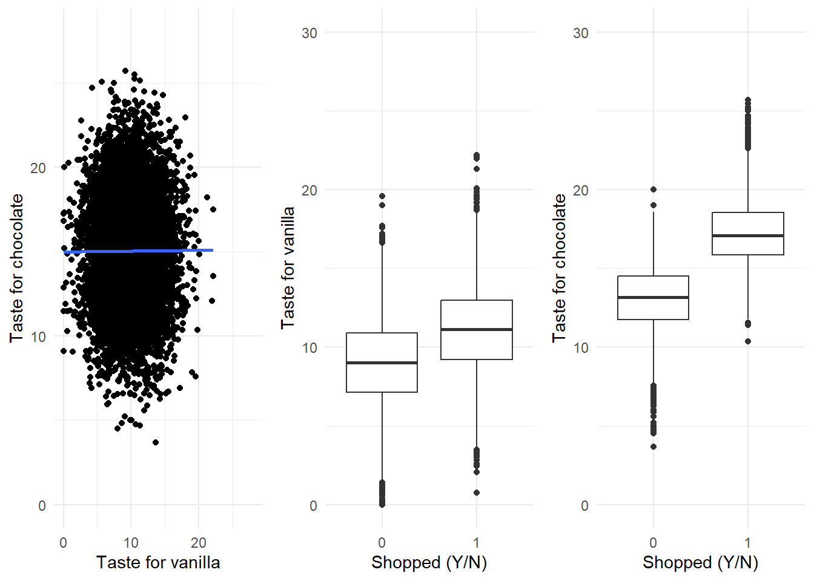
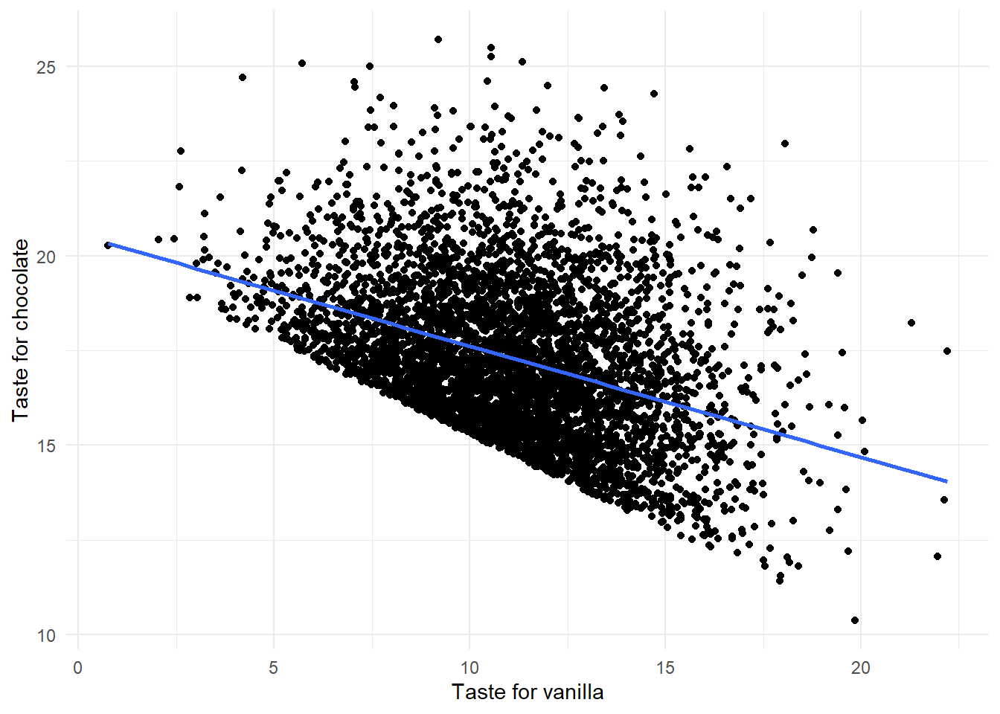

Warning: package 'ggplot2' was built under R version 4.3.2
── Attaching core tidyverse packages ──────────────────────── tidyverse 2.0.0 ──
✔ dplyr 1.1.3 ✔ readr 2.1.4
✔ forcats 1.0.0 ✔ stringr 1.5.0
✔ ggplot2 3.4.4 ✔ tibble 3.2.1
✔ lubridate 1.9.3 ✔ tidyr 1.3.0
✔ purrr 1.0.2
── Conflicts ────────────────────────────────────────── tidyverse_conflicts() ──
✖ dplyr::filter() masks stats::filter()
✖ dplyr::lag() masks stats::lag()
ℹ Use the conflicted package (<http://conflicted.r-lib.org/>) to force all conflicts to become errors
library(boot)
Warning: package 'boot' was built under R version 4.3.2
library(gt)
Warning: package 'gt' was built under R version 4.3.2
library(broom)# library(boot) #Required for Bootstrap simulations# library(rstudioapi)
Variable description
Why Correlation Is Not Causation: A Confounder in Action
#Reading the datastand_tib <-read_csv("chap1-stand_data.csv")
Rows: 2400 Columns: 4
── Column specification ────────────────────────────────────────────────────────
Delimiter: ","
dbl (4): icecream_sales, malt_sales, summer_months, temps
ℹ Use `spec()` to retrieve the full column specification for this data.
ℹ Specify the column types or set `show_col_types = FALSE` to quiet this message.
#Running linear regressions #Biased model (coeff should be 1,000)lm(icecream_sales ~ temps, data = stand_tib) %>%tidy() %>%gt() %>%opt_stylize(style =6, color ="cyan")
term
estimate
std.error
statistic
p.value
(Intercept)
-6169.844
531.5062
-11.60823
2.385706e-30
temps
1171.335
9.0268
129.76197
0.000000e+00
#correct model for icecream (coeffs should be 1,000 and 20,000)summary(lm(icecream_sales ~ temps + summer_months, data=stand_tib)) %>%tidy() %>%gt() %>%opt_stylize(style =6, color ="cyan")
term
estimate
std.error
statistic
p.value
(Intercept)
-7.068995
374.401378
-0.01888079
0.9849378
temps
1001.481846
6.822242
146.79657789
0.0000000
summer_months
19556.774716
361.393093
54.11496531
0.0000000
#Model biased by extra controlling#note how the standard error of the estimate of temp increases a lot#note how the p-values for summary(lm(icecream_sales ~ malt_sales + temps + summer_months, data = stand_tib)) %>%tidy() %>%gt() %>%opt_stylize(style =6, color ="cyan")
#Reading the datasurvey_tib <-read_csv("chap1-survey_data.csv")
Rows: 10000 Columns: 3
── Column specification ────────────────────────────────────────────────────────
Delimiter: ","
dbl (3): vanilla, chocolate, shopped
ℹ Use `spec()` to retrieve the full column specification for this data.
ℹ Specify the column types or set `show_col_types = FALSE` to quiet this message.
#Reformatting shopped variable to binarysurvey_tib <- survey_tib %>%mutate(shopped =as.factor(shopped) %>%relevel(ref="0"))
## Figure 1-5. (a) Tastes for vanilla and chocolate are uncorrelated in the ## overall population. (b) Taste for vanilla is higher for people who shop at ## the ice-cream stand than for people who don’t. (c) Same thing with the taste for chocolate.#Scatterplot of chocolate versus vanilla taste a <-ggplot(survey_tib, aes(x=vanilla, y=chocolate)) +geom_point() +xlim(c(0,28)) +ylim(c(0,28)) +geom_smooth(formula ='y~x', method = lm, se =FALSE) +labs(x='Taste for vanilla', y='Taste for chocolate') +theme_minimal()#Boxplot of vanilla taste against shopping behaviorb <-ggplot(survey_tib, aes(shopped, vanilla)) +geom_boxplot() +labs(x='Shopped (Y/N)', y='Taste for vanilla') +ylim(c(0,30)) +theme_minimal()#Boxplot of chocolate taste against shopping behaviorc <-ggplot(survey_tib, aes(shopped, chocolate)) +geom_boxplot() +labs(x='Shopped (Y/N)', y='Taste for chocolate') +ylim(c(0,30)) +theme_minimal()ggpubr::ggarrange(a,b,c, ncol =3)

### Plotting same scatterplot but for shoppers only#Figure 1-6 Taste for vanilla and chocolate among shoppers. d <-ggplot(survey_tib %>%filter(shopped=='1'), aes(x=vanilla, y=chocolate)) +geom_point() +labs(x='Taste for vanilla', y='Taste for chocolate') +geom_smooth(formula='y~x', method = lm,se =FALSE) +theme_minimal()d

First, I’ll create a connection to my local postgres database thanks to the RPostgres package.
# | warning: false# Creating a connection to my local postgres databaselibrary(RPostgres)
Warning: package 'RPostgres' was built under R version 4.3.2
con <-dbConnect(Postgres(),dbname ="pizza_runner",user ="postgres",password = my_password)
Queries
A. Pizza Metrics
1. How many runners signed up for each 1 week period? (i.e. week starts 2021-01-01)
selectcount(pizza_id)from customer_orders;
1 records
count
14
2. How many unique customer orders were made?
SELECTcount(DISTINCT order_id) from customer_orders;
1 records
count
10
3. How many successful orders were delivered by each runner?
select pn.pizza_name as pizza,count(co.pizza_id) as count_of_pizza_deliveredfrom customer_orders coINNERJOIN runner_orders ro on co.order_id = ro.order_idINNERJOIN pizza_names pn on pn.pizza_id = co.pizza_idWHERE cancellation isNULLor cancellation notIN ('Restaurant Cancellation','Customer Cancellation' )GROUPby pn.pizza_name;
2 records
pizza
count_of_pizza_delivered
Meatlovers
9
Vegetarian
3
5. How many Vegetarian and Meatlovers were ordered by each customer?
select co.customer_id as customers, count(co.pizza_id) as count_of_pizza_ordered from customer_orders co INNERJOIN pizza_names pn on pn.pizza_id = co.pizza_id groupby1;
5 records
customers
count_of_pizza_ordered
101
3
103
4
104
3
105
1
102
3
6. What was the maximum number of pizzas delivered in a single order?
select ro.order_id asorder,count(co.pizza_id) as number_of_pizzasfrom runner_orders roINNERJOIN customer_orders co ON ro.order_id = co.order_idGROUPBY1ORDERBY2DESCLIMIT1;
1 records
order
number_of_pizzas
4
3
7. For each customer, how many delivered pizzas had at least 1 change and how many? and no changes?
-- PART 1-- delivered orderswith cte1 as (select*from runner_orderswhere cancellation isnullor cancellation in ('null', '')),-- orders with at least 1 changescte2 as (select*from customer_orderswhere exclusions <>''and extras <>''or ( exclusions notin ('', 'null')or extras notin ('', 'null', null) ))select cte2.customer_id,count(pizza_id) delivered_pizzas_with_changesfrom cte1innerjoin cte2 on cte1.order_id = cte2.order_idGROUPBY1;
4 records
customer_id
delivered_pizzas_with_changes
102
1
105
1
104
3
103
3
-- PART 2: orders with no changeswith cte1 as (select*from runner_orderswhere cancellation isnullor cancellation in ('null', '')),cte2 as (select*from customer_orderswhere exclusions =''and extras =''or ( exclusions in ('', 'null')or extras in ('', 'null', null) ))select cte2.customer_id,count(pizza_id) delivered_pizzas_with_no_changesfrom cte1innerjoin cte2 on cte1.order_id = cte2.order_idGROUPBY1;
5 records
customer_id
delivered_pizzas_with_no_changes
101
2
102
3
103
3
104
2
105
1
8. How many pizzas were delivered that had both exclusions and extras?
-- delivered orderswith cte1 as (select*from runner_orderswhere cancellation isnullor cancellation in ('null', '')),-- orders with both exclusions and extrascte2 as (select*from customer_orderswhere ( exclusions <>'null'and extras <>'null' )and exclusions <>''and extras <>'')select*from cte1innerjoin cte2 on cte1.order_id = cte2.order_id;
1 records
order_id
runner_id
pickup_time
distance
duration
cancellation
order_id..7
customer_id
pizza_id
exclusions
extras
order_time
10
1
2020-01-11 18:50:20
10km
10minutes
null
10
104
1
2, 6
1, 4
2020-01-11 18:34:49
9. What was the total volume of pizzas ordered for each hour of the day?
selectEXTRACT (hourfrom order_time ) as hour_of_day,count(pizza_id) as pizza_volumefrom customer_ordersGROUPBY1;
6 records
hour_of_day
pizza_volume
18
3
21
3
23
3
13
3
19
1
11
1
10. What was the volume of orders for each day of the week?
-- select EXTRACT (-- dow-- from order_time-- ) as day_of_week,-- count(pizza_id) as pizza_volume-- from customer_orders-- GROUP BY 1;-- orselectto_char(order_time, 'Day') as day_of_week,count(pizza_id) as pizza_volumefrom customer_ordersGROUPBY1;
4 records
day_of_week
pizza_volume
Saturday
5
Thursday
3
Friday
1
Wednesday
5
B. Runner and Customer Experience
1. How many runners signed up for each 1 week period? (i.e. week starts 2021-01-01)
This query calculates the average time in minutes it took for each runner to arrive at the Pizza Runner HQ to pick up the order. It first joins the customer_orders and runner_orders tables to get the order information and the runner’s pickup time. Then, it checks if the pickup_time is null, and if so, it sets the corresponding duration_till_pickup to null. Otherwise, it calculates the time difference between the pickup_time and the order_time in seconds using the EXTRACT() and TIMESTAMP()functions. It then converts the time difference to minutes and rounds it to two decimal places. Finally, it selects the duration_till_pickup, pickup_time, and order_time for each order.
3. What was the average time in minutes it took for each runner to deliver pizzas?
5. What was the difference between the longest and shortest delivery times for all?
-- If we define delivery times as the duration between ro.pickup_time - co.order_time + ro.duration-- then:with cte1 as (selectcasewhen ro.pickup_time ='null'thennullelseround(EXTRACT( epochfrom ( ro.pickup_time::TIMESTAMP- co.order_time::TIMESTAMP ) ) /60,2 )endas duration_till_pickup, ro.pickup_time, co.order_time,round(casewhenleft(ro.duration, 2) ~ '^\d+$'THENcast(left(ro.duration, 2) asinteger)elsenullend,2 ) as cleaned_duration_minutesfrom customer_orders coINNERJOIN runner_orders ro on co.order_id = ro.order_id)selectmax(duration_till_pickup + cleaned_duration_minutes) as longest_delivery_time,min(duration_till_pickup + cleaned_duration_minutes) as shortest_delivery_time,max(duration_till_pickup + cleaned_duration_minutes) -min(duration_till_pickup + cleaned_duration_minutes) as differencefrom cte1;
1 records
longest_delivery_time
shortest_delivery_time
difference
69.28
25.47
43.81
Now, this is a monstrous looking one 😅 .
A (CTE) named cte1 is created, extracting relevant information such as duration_till_pickup, pickup_time, order_time, and cleaned_duration_minutes from the customer_orders (co) and runner_orders (ro) tables. The duration_till_pickup is calculated as the time between pickup and order in minutes. The cleaned_duration_minutes extracts the duration in minutes from the ro.duration field.
The main query then computes the maximum, minimum, and the difference between the sum of duration_till_pickup and cleaned_duration_minutes. These values represent the longest, shortest, and the time difference between delivery times for all orders.
6. What was the average speed for each runner for each delivery and do you notice – any trend for these values?
with cte as (select runner_id,casewhen distance ~ '.*'THENcast(substring(distance, '[0-9\-+\.]+') asfloat)elsenullendas cleaned_distance_km,casewhen duration ~ '.*'THENcast(substring(duration, '[0-9\-+\.]+') asfloat) /60elsenullendas cleaned_duration_hrfrom runner_orders)select runner_id,avg(cleaned_distance_km / cleaned_duration_hr) as speed_km_hrfrom ctegroupby1;
3 records
runner_id
speed_km_hr
3
40.00000
2
62.90000
1
45.53611
This psql query calculates the average speed for each runner for each delivery. It uses a CTE named cte to clean and extract relevant information such as cleaned_distance_km and cleaned_duration_hr from the runner_orders table. The main query then computes the average speed (cleaned_distance_km / cleaned_duration_hr) for each runner and presents the results grouped by runner_id. This allows you to observe trends in the average speed of each runner across their deliveries.
7. What is the successful delivery percentage for each runner?
with part as (select cte.runner_id,count(*) as part_cancelfrom (select runner_id,nullif(cancellation, '') ||nullif(cancellation, 'null') ascancelfrom runner_orders ) ctewherecancelisnullgroupby runner_id),whole as (select runner_id,count(*) as whole_cancelfrom (select runner_id,nullif(cancellation, '') ||nullif(cancellation, 'null') ascancelfrom runner_orders ) ctegroupby runner_id)select p.runner_id,casewhen w.whole_cancel =0thennullelseround( (p.part_cancel::numeric/ w.whole_cancel) *100,2 )endaspercentfrom part pinnerjoin whole w on p.runner_id = w.runner_id;
3 records
runner_id
percent
3
50
2
75
1
100
C. Ingredient Optimisation
1. What are the standard ingredients for each pizza?
1. If a Meat Lovers pizza costs $12 and Vegetarian costs $10 and there were no charges for changes, how much money has Pizza Runner made so far if there are no delivery fees?
-- Creating a view of cleaned dataCREATEORREPLACEVIEW clean_runner_orders ASselect order_id, runner_id,CASEWHEN pickup_time ='null'THENNULLELSE pickup_time::TIMESTAMPEND,cast(substring(distance, '[0-9\-+\.]+') asfloat) as distance,cast(substring(duration, '[0-9\-+\.]+') asfloat) as duration,nullif(cancellation, '') ||nullif(cancellation, 'null') as cancellationfrom runner_orders;--
with cte1 as (select co.pizza_id,count(co.pizza_id) as quantity_soldfrom clean_runner_orders roinnerjoin customer_orders co on co.order_id = ro.order_idwhere cancellation isnullGROUPBY1)select pizza_id, quantity_sold * price as revenuefrom (select*,CASEWHEN cte1.pizza_id =1THEN12WHEN cte1.pizza_id =2THEN10ENDAS pricefrom cte1 ) sq
2 records
pizza_id
revenue
1
108
2
30
-- Creating a random integer generatorcreateorreplacefunction random_between(low int, high int) returns intas $$ beginreturnfloor(random() * (high - low +1) + low);end;$$ language 'plpgsql' STRICT;
2. If a Meat Lovers pizza was $12 and Vegetarian $10 fixed prices with no cost for extras and each runner is paid $0.30 per kilometre travelled, how much money does Pizza Runner have left over after these deliveries?
with cte as (select co.pizza_id, ro.distance *0.3as runner_cost,CASEWHEN co.pizza_id =1THEN12WHEN co.pizza_id =2THEN10ENDAS pricefrom clean_runner_orders roinnerjoin customer_orders co on co.order_id = ro.order_idwhere cancellation isnull)selectsum(price) revenue,round(sum(runner_cost)::numeric, 2) cost,round(sum(price) -sum(runner_cost)::numeric, 2) profitfrom cte
1 records
revenue
cost
profit
138
64.62
73.38
Closing the connection
dbDisconnect(con)
Citation
BibTeX citation:
@online{joshua2023,
author = {Joshua, Edun and Joshua, Edun},
title = {Chapter 1: {The} {Causal-Behavioral} {Framework} for {Data}
{Analysis}},
date = {2023-11-21},
url = {https://joshuaolubori.onrender.com/posts/2023-11-21-BDA-1},
langid = {en}
}